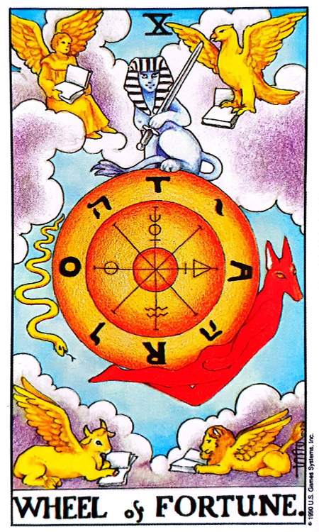
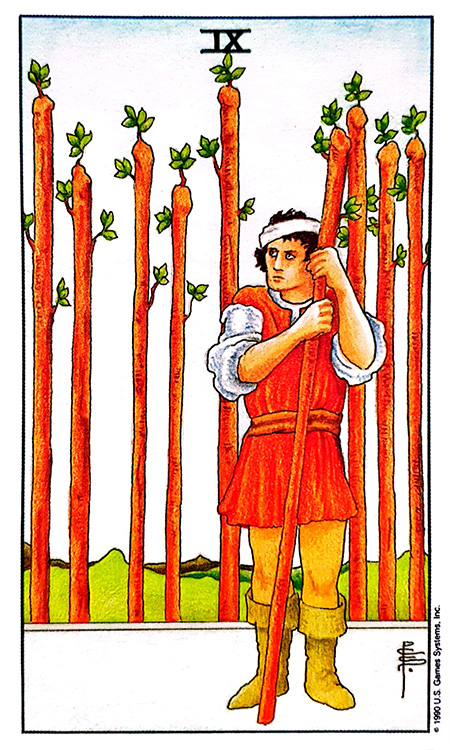

![하늘색 Sky 카드]()
REDSUN COLOR TAROT · STUDY NOTES
쉽고 재미있는 레드썬의 컬러타로 — 챕터 8 (135~148쪽)
“ 하늘은 알고 있다 ”(135쪽 키워드 상자 — 19개 키워드 전체)
이 챕터의 표어는 “하늘은 알고 있다”입니다. Sky는 색채적인 특징보다 하늘이라는 상징적인 의미가 강한 컬러로, 책에서는 Sky Blue가 아닌 Sky로 명칭합니다.
하늘색은 시간, 날씨 조건, 지리적 위치와 같은 요인에 따라 달라질 수 있습니다. 낮에는 태양이 머리 위에 있을 때 하늘이 파랗게 보이고, 일몰과 일출의 하늘은 종종 황혼의 하늘로 알려진 빨강·주황·분홍색의 생생한 색조를 띱니다. 밤에는 태양이 수평선 아래에 있으면 하늘이 어둡게 보이고 별과 천체가 나타나 밤하늘을 만듭니다.
하늘색을 명칭하는 컬러는 문화권마다 다르지만, 통상적으로 Sky Blue를 하늘색으로 사용합니다. 컬러타로에서 하늘색을 Sky Blue가 아닌 Sky로 명칭한 것은 이 색조는 하늘색이라는 색채적인 특징보다는 하늘이라는 상징적인 의미의 특성이 강하기 때문입니다.
『한국민족문화대백과사전』에서는 하늘을 다음과 같이 설명합니다. 지평선이나 수평선 위로 보이는 무한대의 공간 또는 하느님의 별칭, 초인간적 존재와 죽은 사람이 머문다는 세계를 가리키는 일반용어. 하늘은 한울에서 파생되었는데, 한울이 변하여 ‘한울’, ‘한알’로도 변하였고, ‘한’의 ‘ㄴ’이 아래로 내려앉아 ‘하늘’, ‘하눌’ 또는 ‘하늘’로 부르기도 하였습니다.
하늘의 다른 말은 ‘한울’인데, 한울은 ‘한’과 ‘울’의 합성어입니다.
옛날에는 하늘을 환국(桓國)이라고 하였는데, ‘환(桓)’은 환하다·밝다는 뜻으로 광명을 의미합니다. 그러므로 한울은 광명이 빛나는 온 누리라는 뜻을 간직하고 있습니다.
하늘계의 주인은 태양이며, 태양은 광명을 발하는 본체입니다. 옛날 사람들은 하늘을 ‘밝의 뉘’ 즉 밝은 광명의 누리라 하였고, 그 신을 ‘밝의 비’(고어로 븕의 뉘)신이라 하였습니다. 후에 ‘밝’이 변하여 ‘박’이 되었으며, 신라의 시조 박혁거세의 ‘박(朴)’이 이것이요, 또 ‘밝’으로도 변하였으니 발해(渤海)가 이것입니다.
‘한알’은 정신면에서 본 심정적 하늘을, ‘하늘’은 시공을 초월한 불변적 하늘을, ‘하나’는 만물의 근저는 하나라는 절대적 하늘을 말한 것입니다. ‘하나님’의 ‘하나’는 우주의 근본은 유일무이하다는 종교상의 신을 가리키는데, 우리 민족의 유일신은 빛과 열과 광명을 주는 태양을 말합니다.
하늘을 옛날에는 한자로 한(韓), 환(桓), 환(恒)으로 표기하였습니다. 이것들은 모두 동녘에 해가 뜨면 천지가 환하다는 뜻에서 비롯된 유사음입니다. 우리 민족을 한민족(韓民族)이라 한 것은 하늘의 축복을 받는 민족이라는 뜻이며, 평양의 옛 이름인 환도성(丸都城)도 하늘의 가호를 받는 수도라는 뜻입니다.
하늘을 달리 표현하여 ‘한일’이라고도 합니다. 이 한일의 ‘일’은 일(日)·혼·정신입니다. 그러므로 한일은 관대한 마음, 박애 정신, 박시제중(博施濟衆) · 대자대비(大慈大悲) 등의 뜻을 함유하는 말입니다. 유교·불교·도교는 물론 기독교의 정신도 이 안에 모두 들어 있다고 하겠습니다.
한울 이념에서는 천인합일 사상에서 일보 발전한 인내천(人乃天)을 강조합니다. 하늘과 인간이 합하여 하나가 된다는 말에는 하늘과 인간은 벌써 하나가 아니고 둘이라는 것을 전제하고 있습니다.
그러나 이 한울의 인내천 사상은 하늘이 곧 인간이요, 인간이 곧 하늘이라는 뜻으로, 인간과 하늘과의 관계에 시간적·공간적 틈을 허용하지 않습니다. 하늘의 뜻이 바로 인간의 뜻이며, 인간의 뜻이 바로 하늘의 뜻이며, 하늘의 사랑이 바로 인간의 사랑입니다.
맹자는 “마음을 다하여야 성(性)을 알고, 성을 알아야 하늘을 안다”고 하였습니다. 그러나 이 한울사상에서는 내 마음을 알면 곧 하늘의 마음을 알게 되는 것으로 지즉통(知則通)인 것입니다. 그러므로 천도교에서는 한울을 우주의 본체라고 보고 있습니다.
한울의 이념 즉 인내천을 관철하려면 한일사상을 견지하지 않으면 불가능합니다. 바른 정신, 씩씩한 기백, 호연한 기질, 명철한 지성이 한일의 기본 요소이며, 유가의 명명덕(明明德) · 신민(新民) · 지지선(止至善) · 극기복례(克己復禮) · 호연지기 등이 이 한일에 속합니다. 대종교에서는 이를 우주의 뜻이라 합니다.
한일사상을 고수할 때 지속성(하늘)을 유지하게 되고, 유정유일(惟精惟一)하여 하나로 합수 있는 것입니다(하나). 앞으로 양양하게 발전하려면 한울 · 한일 · 하늘을 함축하고 있는 ‘한우’ 사상의 고귀하고 전통적인 고유한 신앙을 더욱 육성·발전시켜야 할 것입니다. (출처: 한국민족문화대백과사전)
인내천 사상에서는 하늘의 뜻이 바로 인간의 뜻이며, 인간의 뜻이 바로 하늘의 뜻이라고 합니다.
신비주의 특히 점성학자들에게 ‘As above, so below(하늘에서 그러하듯이 땅에서도 그러하리라)’라는 격언이 있습니다.
날 때부터 정해진 운명이나 피할 수 없는 운명을 숙명이라고 합니다. 속담에서도 “하늘의 뜻이다”라는 말이 있는데, 이처럼 인간의 운명은 하늘과 연결되어 있습니다.
결국 하늘의 정해진 뜻에 따라 인간의 운명 또한 정해져 있다는 것이며, 운명적인 사람을 만난다거나 운명적인 일을 하게 되는 것을 말합니다.
Sky가 나왔다면 “하늘이 정한 일”로 읽습니다. 우연이라 생각했던 만남·기회가 사실은 숙명적으로 정해진 것이며, 하늘(신)이 지켜보고 있다는 전제가 깔려 있습니다.
“하늘이 알고 땅이 알고 있다”는 말이 있습니다. 이처럼 하늘 아래에는 진실만이 존재합니다.
하늘은 높은 곳에서 늘 우리를 지켜보고 있으므로 우리가 하는 모든 말들과 행동을 알고 있습니다. 어떠한 난관 속에서 진실이 왜곡되고 오해받고 있다면 곧 진실이 드러날 것입니다. 여러 가지 추측이 있을 수 있지만 결국에 진실은 하나입니다.
타로를 볼 때 Sky가 나왔다면 이 진실이라는 의미를 잘 살펴볼 필요가 있습니다.
이 컬러는 희망과 꿈(Dream)의 컬러이기도 합니다. 순발력과 끝없는 탐구의 지성을 추구하고 상상의 나래를 펼칠 수 있습니다. 청운의 뜻을 품고 있는 소년·소녀의 상상의 세계의 상징일 수 있습니다.
“하늘은 스스로 돕는 자를 돕는다”는 말처럼 그 꿈은 상상만 한다고 이루어지는 것이 아니라 노력에 의해서만 이루어진다는 것을 말해주기도 합니다.
당신이 당신의 자리에서 진실한 모습으로 열심히 살아간다면 하늘은 당신을 주목하고 있으며, 당신에게 은총의 빛을 비추어 줄 것입니다.
하나님께서 사람들의 죄악과 악랄함을 심판하고자 대홍수를 일으켰고, 노아의 방주에 올라탄 동물들과 노아의 식구들이 살아남아 다시 세상이 시작될 수 있었습니다.
시간이 흐르고 사람들은 다시 홍수를 일으켜 사람들을 벌할지도 모른다는 생각에 하늘의 신에게 대적하고 자신들의 명예를 알리고자 바벨탑을 쌓았습니다. 사람들은 탑을 높이 쌓아 올렸고, 건축가들은 탑의 중간중간에 자기 방을 만들고 금은보석으로 장식했습니다. 하지만 이에 분노한 하나님은 하늘에서 번개를 내려보내 바벨탑을 무너뜨려 버렸습니다.
무엇을 얻거나 성취하기가 매우 어려운 경우를 비유적으로 “하늘의 별 따기”라고 이야기합니다. 이처럼 하늘은 인간이 야망과 욕망으로는 오를 수 없습니다.
그러나 진실되고 겸손한 마음으로 성실하게 노력한다면 하늘의 인정을 받아 명예를 얻을 수 있습니다.
| # | 성격 특징 |
|---|---|
| 1 | 친절하고 성실한 사람입니다. |
| 2 | 여러 사람의 말을 들어주고 같이 고민하고 해결해 주는 사람으로, 그로 인해 많은 사람으로부터 인정을 받습니다. |
| 3 | 진보와 보수의 두 가지 성향을 같이 가지고 있지만, 주위 사람들은 진보주의로 인식하는 편입니다. |
| 4 | 남자다운 면이 있으며, 가까운 사람에게는 자존심이 강하고 고집이 센 편입니다. |
| 5 | 사람들과 허물없이 대하며 지냅니다. |
| 6 | 다소 내성적이지만 겉으로 보기에는 밝고 활발해 보입니다. |
| 7 | 고정관념을 가지고 있지 않습니다. |
| 8 | 야망이 있으며 명예를 소중히 여깁니다. |
| 9 | 다소 기분에 따라 변덕스러운 면이 있습니다. |
“하늘은 알고 있다” — 친절·성실·남자다움·야망·명예 중시의 명예 지향적 면과, 자존심·고집·내성·변덕의 그늘진 면이 함께 존재합니다. 겉보기는 밝고 활발하지만 속은 예민합니다.
| 카드 조합 | 핵심 한 줄 | 상세 해석 |
|---|---|---|
 X THE WHEEL of FORTUNE (운명의 수레바퀴) + Sky |
운명적인 만남 · 천생연분 | “만날 사람은 만난다”는 말이 있습니다. 애인이 있는 사람의 연애운이라면 천생연분의 짝을 만나 두 사람은 진실되고 서로를 잘 이해하며 만나고 있다고 말해주고 있습니다. 서로 간의 신뢰감이 있으며 맑고 아름다운 사랑입니다. 하늘이 축복해 준 사랑이며 운명적인 만남이라 할 수 있습니다. |
| + Sky (질문별 포인트) |
야외 · 여행 중 만남 | “애인을 만날 수 있을까요?” 질문이라면 운명적인 상대를 만나게 될 것입니다. 애인을 만나는 곳은 실내가 아닌 야외공간이며 여행 중에 만날 가능성이 있습니다. |
| + Sky (악조건) |
만났다 헤어지는 반복 | 주변의 카드가 좋지 않다면 만났다 헤어지고 만났다 헤어지는 것처럼 좋지 않은 일이 계속 반복되는 상황입니다. |
| 카드 조합 | 핵심 한 줄 | 상세 해석 |
|---|---|---|
 IX of WANDS (완드 9) + Sky |
포기할 줄도 알아야 | 부정적인 유니버셜 웨이트 타로의 Sky 컬러가 나왔다면 지금의 상황이 좋지 못합니다. 어떻게든 이 사랑을 지키고 싶지만 이미 많이 지쳐 있고 허망한 생각뿐입니다. 이것이 하늘의 운명이라 생각하고 포기할 줄도 알아야 합니다. 그 사람의 진실하지 못한 모습이 나를 더욱 힘들게 합니다. 믿음이 깨진 사랑은 유지하기가 어렵습니다. |
| + Sky (질문별 포인트) |
아직 준비 안 됨 | “연인을 만날 수 있을까요?” 질문이라면 당분간은 만나기 어려워 보입니다. 지금은 만날 준비가 안 되어 있습니다. 내가 사랑할 준비가 되어 있을 때 사랑은 찾아올 것입니다. |
| 카드 조합 | 핵심 한 줄 | 상세 해석 |
|---|---|---|
 VI of PENTACLES (펜타클 6) + Sky VI of PENTACLES (펜타클 6) + Sky |
노력한 만큼의 보상 | 금전운에서 지금과 같은 배열의 Sky 컬러는 금전 관리를 잘하고 있으며 노력만큼의 대가를 받게 되는 것입니다. 열심히 노력했는데 노력의 결과보다 보상이 적다면 실망할 것이고, 조금만 노력했는데도 커다란 보상을 받게 된다면 많이 기쁠 것입니다. 이 카드는 딱 자신이 노력한 만큼의 보상을 받게 되는 카드입니다. |
| + Sky (핵심 원리) |
보상 = 노력량 비례 | 열심히 노력한 사람은 그것에 상응하는 보상을 받게 될 것이고, 노력을 하지 않았다면 보상은 미미할 것입니다. 이 사람은 그동안 노력을 게을리하지 않았고 그로 인해 적절한 보상을 받고 있습니다. |
하늘이 시간이나 날씨에 따라 색이 달라지듯이 Sky는 같이 보는 유니버셜 웨이트 타로의 영향을 많이 받습니다. (책 빨간 밑줄 강조)
| 카드 조합 | 핵심 한 줄 | 상세 해석 |
|---|---|---|
| 긍정 타로 + Sky (합격운) |
합격 가능성 높음 | 긍정적인 유니버셜 웨이트 타로와 Sky가 나왔다면 합격의 가능성이 큽니다 (형광펜). 그동안 청운의 꿈을 갖고 열심히 노력해 왔으며 만족스런 결과를 얻게 될 것입니다. |
| 긍정 타로 + Sky (매매운) |
만족스런 가격 성사 | 매매운이라면 만족스런 가격에 매매가 이루어질 것입니다. |
| 부정 타로 + Sky (합격 · 매매) |
가능성 희박 | 반대로 부정적인 유니버셜 웨이트 타로와 Sky가 나왔다면 합격이나 매매의 가능성이 희박합니다. |
| 카드 조합 | 핵심 한 줄 | 상세 해석 |
|---|---|---|
| 긍정 타로 + Sky | 운명과 같은 일 | 사업운에서 긍정적인 유니버셜 웨이트 타로와 Sky가 나왔다면 그동안 열심히 노력해 왔고 지금의 상황이 좋다는 것입니다. 이 일은 이 사람과 운명과도 같은 일이며 희망하는 대로 잘 진행되고 있습니다. 주위에서 도와주는 사람이 있으며 앞으로의 성장 가능성도 큽니다. |
| 부정 타로 + Sky | 먹구름도 걷힌다 | 부정적인 유니버셜 웨이트 타로와 Sky라면 노력에 비해 결실이 적고 지금의 상황이 먹구름이 낀 것처럼 좋지 않습니다 (형광펜). 하지만 먹구름은 시간이 지나면서 사라지듯이 노력한다면 곧 좋은 날이 올 것입니다 (형광펜). |
| 항목 | 내용 |
|---|---|
| 기본 원칙 | 기본적으로는 건강한 컬러입니다. 단, 부정적인 상황에서는 아래의 건강을 조심해야 합니다. |
| 주의 질환 리스트 | ① 공기로 전염되는 병 — 독감, 각종 바이러스 등 ② 황사로 인한 병 |
| # | 룰 | 내용 |
|---|---|---|
| 1 | 동반 타로의 영향을 받는다 | 하늘이 시간·날씨에 따라 색이 달라지듯 Sky는 같이 보는 유니버셜 타로의 긍정/부정을 그대로 따른다 (빨간 밑줄). |
| 2 | 진실은 드러난다 | “하늘이 알고 땅이 알고 있다” — 왜곡·오해된 진실이 곧 밝혀진다. 부정 타로 + Sky = 진실하지 못한 문제 · 믿을 만한 사람 아님. |
| 3 | 노력 = 보상 | “하늘은 스스로 돕는 자를 돕는다” — 노력한 만큼의 대가. 펜타클6 = 딱 노력량만큼의 보상. |
| 4 | 운명 · 숙명 | “As above, so below” — 운명적인 만남·일. 연애 = 천생연분, 야외·여행 중 만남. |
| 5 | 허황 · 명예 | 바벨탑처럼 야망·욕망으로는 하늘에 오를 수 없다. 겸손한 성실로만 명예를 얻는다. |
| 섹션 | 핵심 명제 |
|---|---|
| 기본 | “하늘은 알고 있다” · Sky Blue가 아닌 Sky — 색보다 상징(하늘)이 강하다 · 키워드 19 (남성성·진실·명예·희망·운명·자유…) |
| 특성 | 하늘은 시간·날씨·위치에 따라 변함 — 낮(파랑) → 일출·일몰(황혼) → 밤(별·천체). |
| 한울 사상 | 한울 = 한(크다)+울(울타리) → 큰 울타리·큰 우리 · 환국 = 광명이 빛나는 누리 · 인내천 = 하늘이 곧 인간. |
| 한알·한일·하나 | 한알=심정적 하늘, 한일=바른 정신(정의·의리·호연지기), 하나=절대적 하늘 · 한민족=하늘의 축복 받는 민족. |
| 운명의 색 | As above, so below — 하늘의 뜻대로 운명이 정해져 있다 · 운명적인 사람·일. |
| 진실 · 노력 | 진실은 드러난다 · “믿는 도끼에 발등 찍힌다” · 하늘은 스스로 돕는 자를 돕는다 — 꿈은 노력으로만 이뤄진다. |
| 허황 · 명예 | 바벨탑(야망은 무너진다) · “하늘의 별 따기” — 겸손한 성실만이 명예를 얻는다. |
| 연애 | 수레바퀴+Sky=천생연분·야외/여행 만남 / 완드9+Sky=믿음 깨진 사랑·포기할 줄도 알아야. |
| 금전 · 매매 · 합격 | 펜타클6=노력만큼의 보상 / 긍정+Sky=합격·매매 가능성 큼 / 부정+Sky=희박. |
| 사업 · 진로 · 건강 | 긍정=운명과 같은 일 / 부정=먹구름도 걷힌다 / 진로=파일럿·기상청·천문학자·점성술사 등 하늘 직업 / 건강=공기 전염병(독감·바이러스)·황사. |
Sky는 “하늘은 알고 있다” — 진실·운명·노력·명예의 컬러입니다. 하늘의 뜻을 믿되, 하늘은 스스로 돕는 자만 돕는다는 것을 기억하세요.